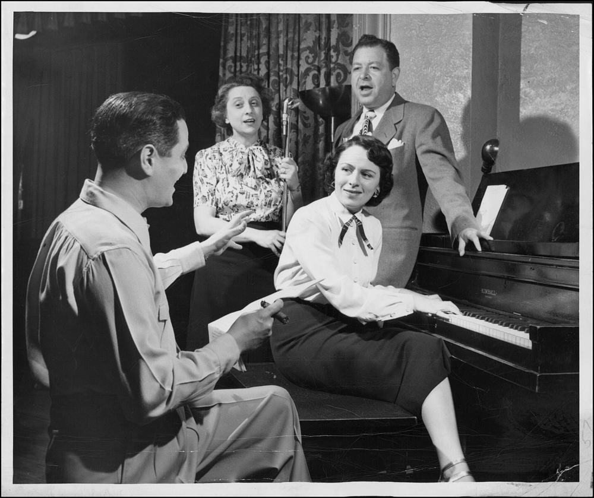
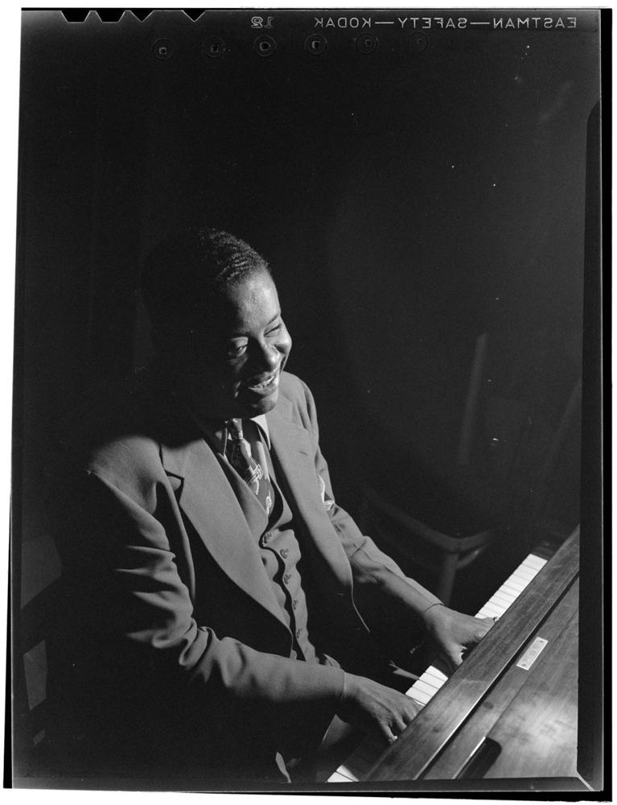

故事
孟克帶他走進俱樂部，對大家說，這是我的學生。他是鋼琴手 Bud Powell，1924 年生在紐約哈林區。他五歲開始上古典鋼琴課。
十歲時，他迷上搖擺樂，模仿 Fats Waller 和 Art Tatum。四十年代，Thelonious Monk 把他帶進 bebop 的圈子。Monk 後來寫了一首曲子給他，叫 In Walked Bud。

他把薩克斯風那種又快又長的句子，搬到鋼琴的右手上。左手只輕輕按幾個和弦，右手一長串單音往前衝。很多後來的爵士鋼琴手，都是聽他的唱片學的。下次聽 bebop 鋼琴，找找那一長串一口氣彈完的右手。
故事後面
Bud Powell 被認為是 bebop 鋼琴的奠基者，他把薩克斯風和小號那種又快又長的句子，搬到鋼琴的右手上。
Thelonious Monk 很早就看到他的才華，還寫了 In Walked Bud 給他。
他一生健康狀況不佳，晚年住在巴黎，仍持續演出和錄音。

這樣聽
聽右手一長串單音，和左手偶爾重重落下的和弦。
逐句英文
Monk walked him into the club and told everyone: this is my student.
He was pianist Bud Powell, born in Harlem, New York, in 1924.
He started classical piano lessons at five.
At ten he fell for swing, imitating Fats Waller and Art Tatum.
In the 1940s, Thelonious Monk brought him into the bebop circle.
Monk later wrote him a tune called In Walked Bud.
He moved the fast, long lines of the saxophone into the piano's right hand.
His left hand lightly placed a few chords while the right raced ahead in long single-note lines.
Many later jazz pianists learned by listening to his records.
Next time you hear bebop piano, listen for that right hand playing a long line in one breath.
查證筆記與出處
「這是我的學生」是條目 protégé 的口語化，不是原話引述。「右手搬薩克斯風句子」是樂評的普遍說法，待查第二來源。
https://en.wikipedia.org/wiki/Bud_Powell
https://en.wikipedia.org/wiki/In_Walked_Bud
一分鐘影片版在 Instagram @jazz101tw。